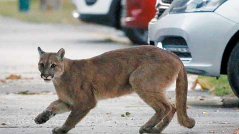
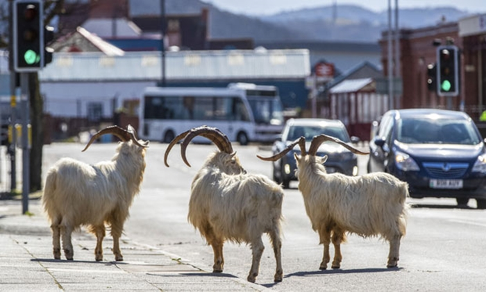
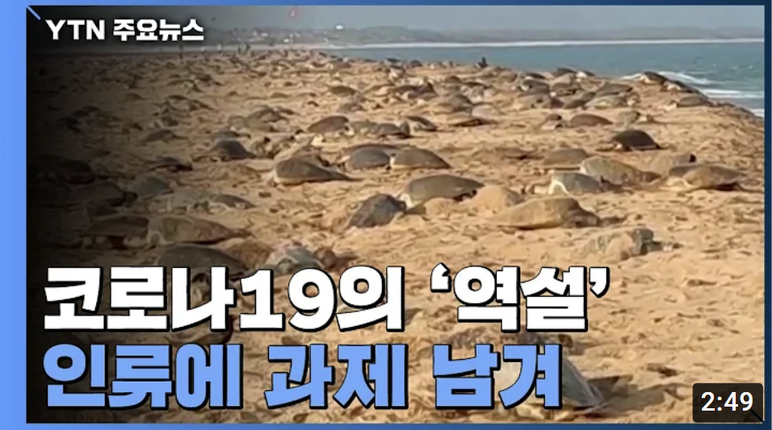

<!DOCTYPE html>
<html lang="ko">
<head>
  <meta charset="UTF-8">
  <title>blog4</title>
  <link rel="stylesheet" href="css/blog-2600.css">
</head>
</html>
<body>
  <div id="base">
    <div class="header">
      <h1>야생동물들의 민간 습격?!</h1>
      <p style="color: rgb(153, 153, 153)">2021.12.06</p>
    </div>
    <hr>

    <div class="content">
      <p> 코로나로 인해 전세계가 사회적 거리두기로 인해 자유로웠던 활동에 제약이 걸렸다. 꽉 막히던 도로가 텅 비고, 
        쉴 새 없이 돌아가던 공장들도 잠시 멈췄다.</p>
      <p>이렇게 사람들의 활동이 잠잠해지자 다른 생물들의 활동이 활발해지기 시작했다. 사람들의 시선에서 숨어서 지내던 
        야생동물들이 텅 빈 도로와 거리로 나오기 시작했다.
      </p>

      
      <span style="font-size: 13px; padding-top:5px; color: rgb(129, 128, 128)">칠레 산티아고의 길거리를 돌아다니는 퓨마</span>
        <p>동물원에 가야만 볼 수 있었던 퓨마가 버젓이 길거리를 돌아다니고 있는 것이 발견됐다. </p>
      
      <span style="font-size: 13px; padding-top:5px; color: rgb(129, 128, 128)">영국 북웨일즈 휴양지에 나타난 야생 염소떼</span>
      <p>미국 캘리포니아주 오클랜드에서는 야생 칠면조 떼가 거리를 활보하는 모습이 포착됐고, 
        스페인 북부 아스투리아스에는 밤이 되자 곰들이 거리를 돌아다니는 모습이 SNS에 올라오기도 했다.</p>
      <p>환경 단체와 전문가들은 인간에게 보금자리를 빼앗겼던 야생동물들이 자신들의 원래 보금자리를 찾아가고
          있다고 말했다.
      </p>
      <p>실제로 없어졌던 동물들이 다시 돌아오는 사례도 있었다. 인도 동북 오디샤주에 있는 루시쿨야 해변은 올리브 바다거북들이
          알을 낳으러 오는 장소다. 하지만 수많은 관광객들로 인해 해변이 오염되자 바다거북들이 이 해변을 떠나서 알을 낳으러 돌아오지 
          않을 때가 있었다.</p>
      <p>하지만 코로나19로 해변 출입이 통제되면서 많았던 해변 쓰레기들이 사라지자 바다거북들이 다시 알을 낳으러 돌아왔다.
        이 사례는 사람들의 활동 통제를 통해 파괴됐던 생태계가 다시 회복되고 있음을 보여주고, 인간이 얼마나 생태계를 파괴해 왔는지를 
        보여주고 있다.
      </p>
      <p>인간에게 닥친 큰 위기가 오히려 지구를 다시 살리고 있다는 것이 아이러니 하기도 하다. 이를 통해서 코로나19가 끝나도 회복되고 있는
        환경을 지켜내려는 노력이 필요하다고 생각한다.
      </p>
    
      <a href="https://www.youtube.com/watch?v=HRrAsrqNxP4" target="_blank"></a>
    </div>
    
    <div id="lightbox">
      
    </div>

    <div class="footer">

    </div>

  </div>


  <script src="lightbox.js"></script>
</body>